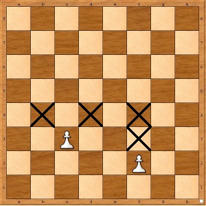
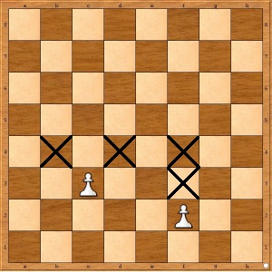

New to chess? Learn the basics now!
A chessboard consists of 64 squares which can be split into 32 dark and 32 light squares. Both players have the same amount of pieces on the board which is 16 for each player. The rows called ranks and the columns called files. One player has the white pieces, the other the black pieces and the board looks like this:

One important thing to mention is that when you place the board in front of you the square in the bottom-left corner must be a dark square. On the picture we have above our chessboard has numbers and letters on its edge. These numbers and letters split our chessboard into squares which makes us easier to identify them. It also helps to set up our board since if you are playing as white then the square in the bottom-left corner should be the A1 square otherwise (if you are playing as black) H8.
Each type of chess piece has its own method of movement.
- The king can move into any directions (horizontally, vertically, or diagonally) but exactly one square at a time. There is a special move with the king called castling, which is allowed once per game.
- The rook can move any vacant squares horizontally or vertically.
- The bishop can move any number of vacant squares diagonally.
- The queen can move any number of vacant squares horizontally, vertically, or diagonally.
- The knight can move two squares vertically and one square horizontally, or two squares horizontally and one square vertically (forming a shape of an "L").
- Pawns have the most complex rulse of movement:
- A pawn moves straight forward one square, if that square is vacant. If it has not yet moved, a pawn also has the option of moving two squares straight forward, provided both squares are vacant. Pawns cannot move backwards.
- A pawn can capture an enemy piece on either of the two squares diagonally in front of the pawn. The pawn is involved in two special moves called en passant and promotion.
Castling
Castling is when you move the king 2 squares towards a rook, then placing the rook on the other side of the king, adjecent to it. Castling is permissible if the following conditions are met:
- There are no pieces between the king and the rook.
- The king cannot be in check, nor can the king pass through any square that is under attack by an enemy piece, or move to a square that would result in check.
- Neither the king nor the rook has previously moved during the game.
En passant
When a pawn advances two squares from its original square and ends the turn adjacent to the opponent's pawn, it may be captured by that pawn of the opponent's, as if it had moved only one square forward. This capture is only legal on the opponent's next move immediately following the first pawn's advance.
Promotion
If a player advances a pawn to its eighth rank, the pawn is then promoted (converted) to a queen, rook, bishop, or knight of the same color at the choice of the player (a queen is usually chosen). The choice is not limited to previously captured pieces. Hence it is theoretically possible for a player to have up to nine queens or up to ten rooks, bishops, or knights if all of their pawns are promoted.
Basic moves

 
